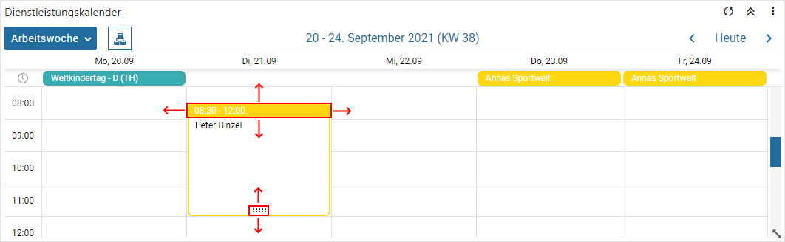
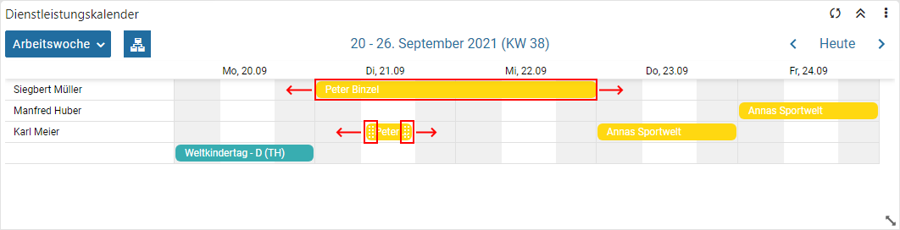
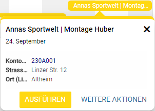

Belegzeilenkalender
Wenn Belegzeilen als Basis des Kalenders verwendet werden, so können folgende Datumsfelder für die Anzeige genutzt werden:
ü "Lieferdatum" und / oder "Bestätigtes Lieferdatum"
Das Besondere an dem Belegzeilenkalender ist die Interaktivität. D.h. die Termineinträge können innerhalb des Kalenders verschoben werden, was wiederum eine Änderung der Datumsfelder im WinLine FAKT-Beleg zur Folge hat. Die Änderung als solches muss dabei über die Belegerfassung bestätigt werden, wobei dieses über die Standard-Belegerfassung oder ein individuelles Formular stattfinden kann. Die Einstellung hierfür wird in den Belegoptionen (Register "DrillDown / Fokus" - Bereich "Bearbeitung beim Verschieben von Einträgen im Belegzeilenkalender") getroffen.
Achtung
Wurde keines der oben aufgeführten Datumsfelder in den Aufbau der Liste hinterlegt, so werden diese automatisch in den Kalender übergeben.
Hinweis
Folgende Punkte sind bei der Termindarstellung bzw. einem Drag & Drop zu beachten:
ü Termin oder
Ganztagestermin
Wenn in den FAKT-Parametern die Option "Lieferdatum mit
Uhrzeit" aktiviert wurde, so kann neben dem Lieferdatum auch eine Uhrzeit in der
Belegerfassung angegeben werden. Diese Uhrzeitenangabe steht in individuellen
Formularen ohne Tabelle hingegen nur zur Verfügung, wenn in der
"mesonic.ini"-Datei (im WinLine-Verzeichnis zu finden) folgender Eintrag
vorhanden ist:
[Invoicing]
WithDate=1
Hinweis
Nur, wenn eine Belegzeile bereits in der Belegerfassung mit einer Uhrzeit versehen wurde, so wird bei einem Drag & Drop auch die Uhrzeit ggfs. angepasst. Ansonsten bleibt der Eintrag für die WinLine immer ein Ganztagestermin.
ü Terminzeitraum
Die Dauer von
Ganztagesterminen kann durch eine Vergrößerung im Kalender nicht beeinflusst
werden, d.h. die Zeitspanne bleibt immer gleich, nur der Startzeitpunkt kann
angepasst werden.
ü Enddatum
Sollte das Datum
keinen Inhalt aufweisen, so wird automatisch das Startdatum als Enddatum
verwendet und entsprechend (bei einem Drag & Drop) in die Belegerfassung
übergeben.
ü Übergabe an die
Belegerfassung
Bei einem Drag & Drop werden immer die Felder
"Lieferdatum" (als "von"-Datum) und "Bestätigtes Lieferdatum" (als "bis"-Datum)
mit einem neuen Datum versehen! Welche Hinterlegung in den Tabellen "Startdatum"
bzw. "Enddatum" des Kalenders
getroffen wurde ist hierbei irrelevant.
ü Speicherung
Die Speicherung des
neuen Zeitraums erfolgt immer über die Belegerfassung. D.h. der Kalender gibt
das neue Datum an die Belegerfassung und muss dort gespeichert werden. Nach
Beendigung der Belegerfassung wird wieder in den Kalender gewechselt und
automatisch aktualisiert.
ü Belegerfassung
Welche
Erfassungsmaske bei einem Drag & Drop geöffnet wird, ist abhängig von der
Einstellung "Vorlage" des Programms "Belegoptionen" (Register "DrillDown /
Fokus").
Achtung
Handels es sich um eine Belegzeile eines Fertigungsbelegs, so wird automatisch Fertigungserfassung mit der dort zuletzt verwendeten Vorlage geöffnet. In diesem Fall findet nach dem Schließen des Programms keine automatische Aktualisierung des Kalenders statt.
ü Ansicht "Jahre" und "Agenda"
In
der Jahres- und Agenda-Ansicht wird ein Drag & Drop nicht unterstützt.
ü Ansicht "Tag", "Woche" und
"Arbeitswoche"
In der ungruppierten Tages-, Wochen- und Arbeitswochen-Ansicht
steht ein Drag & Drop bei Ganztagesterminen nicht zur Verfügung.
ü Ansicht "Monat"
In der
ungruppierten Monats-Ansicht können Termine nur tageweise verschoben werden.
ü WinLine mobile
Im CRM Daten
Cockpit steht die Funktionalität des Drag & Drop nicht zur Verfügung.
Beispiele
ü Drag & Drop - ungruppierte
Kalender

ü Drag & Drop - gruppierte
Kalender

Tooltip

Im Tooltip eines Belegzeilenkalenders werden automatisch die Buttons "Ausführen" und "Weitere Aktionen" zur Verfügung gestellt.
Ø Filter [optional]
Wurde in den Einstellungen ein Filterfeld hinterlegt, so kann durch Anwahl des Buttons "Filter" der Quickfilter ausgelöst werden.
Ø Ausführen
Die zuletzt verwendete "Aktion" wird ausgeführt.
Ø Weitere Aktionen
Durch Anwahl dieses Buttons stehen die folgenden Aktionen, bezogen auf den Beleg der Belegzeile, zur Verfügung:
ü Belege
ü Belegmanagement
ü Info im Belegmanagement
ü Belegkurzinfo
ü als xxx bearbeiten (abhängig vom Beleg)
ü Beleg laden…
Farbgebung
Die Farbgebung der Belegzeilen kann pro Belegstufe gesteuert werden. Hierfür steht in den FAKT-Parametern der Bereich "Belegzeilenkalender" zur Verfügung.